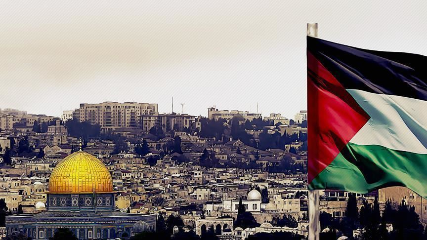

Jair Bolsonaro desencadenado
Noticias


El gobierno del presidente brasileño, Jair Bolsonaro, siguió este martes con la remodelación que comenzó con el cambio de seis ministros y anunció la "sustitución" de los jefes de los tres cuerpos de las Fuerzas Armadas, que son uno de los pilares de su gestión. La víspera se anunciaron cambios en seis de los 23 ministerios, lo que supone casi la cuarta parte, y que incluyeron la cartera de Defensa, hasta entonces en manos del general Fernando Azevedo e Silva.
Se repite la historia
Este sábado Palestina e Israel intercambiaron ataques con misiles. Es el desencadenante tras días de protestas de ciudadanos palestinos en Jerusalén por las restricciones a la hora de celebrar el Ramadán. Las manifestaciones tuvieron el jueves el día más violento, con más de 100 palestinos heridos y con la extrema derecha israelí gritando lemas como "muerte a los árabes". Lo que empezó con una prohibición, siguió en protestas, para desembocar en unos enfrentamientos en los que ya está habiendo cruce de misiles. Este sábado, militantes palestinos lanzaron 36 cohetes contra Israel. Lo hicieron desde Gaza, territorio palestino, y donde el Ejército israelí bombardeó objetivos del grupo gobernante Hamás. La escalada es menor, pero el conflicto va en aumento. El inicio de las discrepancias fue el 12 de abril, fecha en la que empezó el Ramadán. Pese a ser referente mundial en vacunación, Israel decidió bloquear, mediante barricadas, el acceso a la Puerta de Damasco, donde los musulmanes se concentran en la noche después del ayuno diurno. Esto desencadenó en protestas en Jerusalén por parte de la comunidad musulmana, en su mayoría palestinos, quienes tienen derecho a residencia, pero no a ciudadanía.
China sin Taiwan

China advirtió que los intentos de Taiwán para buscar la independencia "significarían la guerra". El inusual aviso sucede pocos días después de que China incrementara sus actividades militares y sus aviones de guerra volaran cerca de la isla. También se da después de que el nuevo presidente de Estados Unidos, Joe Biden, reafirmara su compromiso con Taiwán y delineara la postura de su gobierno en Asia. EE.UU. tildó las declaraciones de China de "desafortunadas", añadiendo que las tensiones no deben conducir a "nada que se parezca al enfrentamiento".